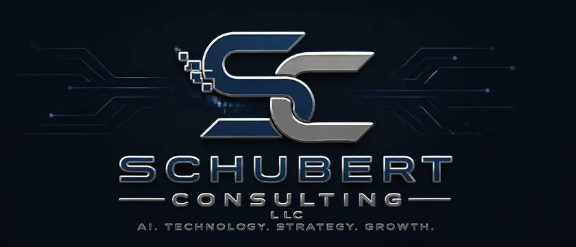

Work depends on memory
Job notes, customer details, approvals, and next steps live in too many heads, inboxes, files, or hallway conversations.

Start hereSchubert Consulting LLC / Grand Rapids, Michigan
We map the messy handoffs, tools, decisions, and repeat work inside your company, then build a private AI system around that reality. No generic chatbot. No one-size-fits-all template.
We build the private AI and automation systems that sit between people, tools, decisions, and risk. Not a GoDaddy template. Not a contractor pass-through. Not a chatbot wrapper. A company-owned control surface for the work that cannot drift.
What To Bring
You do not need an AI plan. Bring one place where people keep retyping, searching, waiting, checking, correcting, or chasing status.
Job notes, customer details, approvals, and next steps live in too many heads, inboxes, files, or hallway conversations.
Forms are incomplete, requests arrive differently every time, and bad information keeps turning into bad output.
Your business apps, spreadsheets, portals, devices, and reports all matter, but they do not help people see the same picture.
The Transition
The visual story is the work itself: gears, circuitry, roots, trees, and open sky. Operations become clearer when the system grows from the way the business already runs.
People, machines, forms, calls, schedules, vendors, and customers all push work through the same system.
We map inputs, owners, tools, approvals, and outputs so decisions are based on the work, not assumptions.
Before automating anything, we look for missing fields, duplicate entry, unclear requests, and unreliable sources.
Existing software, portals, spreadsheets, sensors, files, and hardware can be connected without pretending one tool solves everything.
Less chasing, fewer blind spots, cleaner inputs, clearer decisions, and a system your company can understand and own.
The First Move
We will map it, identify the first safe AI pilot, and show what should stay human before automation touches anything important.